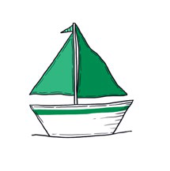
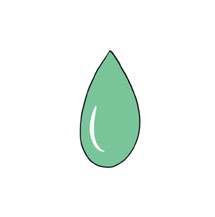
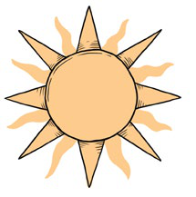
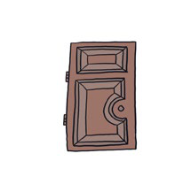
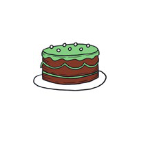
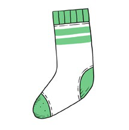
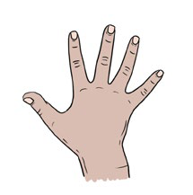

6
DETECTIVE DE SONIDOS
En esta actividad, cada estudiante debe reconocer si un sonido determinado aparece dentro de una palabra.
- La educadora nombra las imágenes.
- Propone escuchar cada palabra e identificar si contiene el sonido /r/.
- Si es necesario, repite la palabra lentamente para facilitar la identificación del sonido.
- Se continúa de la misma manera con todas las palabras.
BARCO, GOTA, CARTA, MEDIA,
SOL, PUERTA, TORTA, MANO






